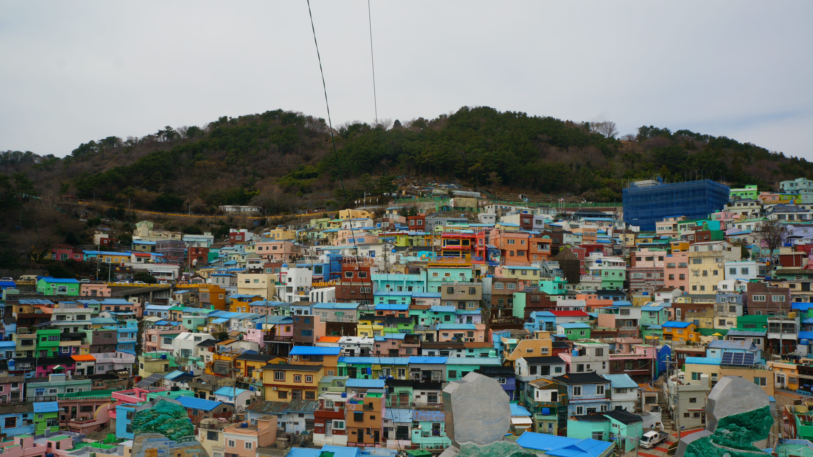

Packing for Seoul
Now comes the fun part, actually planning the trip! I've been "virtually visiting" Korea through my screen for as long as I could remember, so this entry is me pretending like I'm finally booking the flight. What do I need to know? Where am I going? And what could go wrong?
Need to Know
Entry rules
Good news: as an American citizen I don't need a visa for trips up to 90 days, and I'm exempt from the K-ETA through December 31, 2026. I'd just fill out the online e-Arrival Card, which opens 3 days before I land.
Money
Korea uses the won (₩). My card should work pretty much everywhere, but I'd keep some cash on me for street food and markets. And no tipping, which is honestly a nice break from LA.
Getting around
A T-money card gets me on the subway and buses, and I can even pay at convenience stores with it. To get to Busan, I'd take the KTX bullet train. It's only about 2.5 hours!
Apps
Fun fact I didn't know: Google Maps barely works for directions in Korea. So I'd download Naver Map or KakaoMap, plus Papago to translate and Kakao T to call taxis.
Power
Korea uses 220V with round two-pin plugs (Type C/F). As a CS student, my laptop and phone are my whole life, so an adapter is non-negotiable.
Manners
- Use two hands when giving or taking something
- Shoes off in homes and some restaurants
- No loud phone calls on the subway
- Don't sit in the priority seats
Survival Phrases
Years of BTS and K-dramas taught me a lot of Korean... mostly "saranghae" and dramatic gasps. Here are the polite phrases I'd actually need to survive.
Packing List
My Itinerary
I'd go in the fall (September to November), when it's cool out and the leaves are changing. I'm definitely skipping the summer monsoon, because I'm from LA and I don't do humidity. Click through the days to see my stops on the map!

Expectation vs. Reality
Let's be real: most of what I "know" about Korea comes from BTS, K-dramas, and animated movies. I love them, but they're the highlight reel, not the full picture. Each card shows what I'm expecting vs what I'd actually find.
Reflection
Planning this trip made me realize how much of my idea of Korea comes from a screen. The Seoul in my head is from music videos, dramas, and concert stages, all perfectly lit and edited. But the real city is where people commute, cram for exams, and work long hours. That's the side of Korea I touched on in Entry 1, and it's way less glamorous than a BTS music video.
I think the biggest reality check would be that I'd be the outsider for once. When I'm watching a K-drama, subtitles explain everything to me. In real life, I'd be the one squinting at a menu or not knowing when to bow. Honestly, that's what makes me want to learn more before I go. It's also what leads into my next entry, where I compare Korean culture to my own life here in LA.
Sources
- U.S. Department of State. "South Korea Travel Advisory." https://travel.state.gov/en/international-travel/travel-advisories/south-korea.html
- Korea.net. "e-Arrival raises speed, convenience of foreign entry into nation." https://www.korea.net/NewsFocus/FoodTravel/view?articleId=267089
- Korea Tourism Organization. "Visit Korea." https://english.visitkorea.or.kr